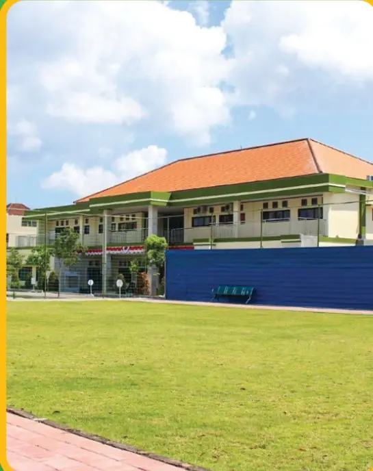

About Us
Founded on 2 May 2016 under Yayasan Mutiara Jimbaran, with the education motto Bright, Virtuous and Visionary.


A Warm Welcome
Why early education matters
Early education is one of the main pillars that shapes a child’s future and prepares a young generation able to serve the nation. Mutiara School offers character education that guides young people towards good morals. Beyond character, leadership and communication skills are also a main focus of our programmes. We know that finding the right place for your child is not easy.
Parents, what great gift do you wish to give your child for the future? How will you feel watching your child grow and develop well over the coming years?
Social life moves quickly and dynamically, so we evaluate ourselves continuously. Yet our sincere commitment to guide every child through their learning journey will never fade. Our great hope is that Mutiara students grow into a generation that carries stories of goodness and a growth mindset, becoming strong, capable leaders with self-respect who help Indonesia become better.
Warmest regards, Lailatul Widayati, S.H., M.Pd.Director of Education
- Year founded
- 2016
- Students
- 754+
- Educators
- 100+
- Accreditation, all levels
- A
Our history
Mutiara School was founded on 2 May 2016 under Yayasan Mutiara Jimbaran. It began operating with the new student admissions for the 2017/2018 school year for Mutiara Preschool and Mutiara Primary, followed by Mutiara Junior High in 2020/2021.
Today Mutiara Preschool, Primary and Junior High have more than 754 students, supported by more than 100 educators who hold a high sense of responsibility for their students’ education.
Founders and foundation
 H. Mudjiono, S.Pd.IFounder and Chair of the Advisory Board
H. Mudjiono, S.Pd.IFounder and Chair of the Advisory Board- H. TurmudiFounder and Advisory Board member
- H. Abdur RahmanFounder and Advisory Board member
- H. Nur AsyurFounder
 Alm. Hj. Tri Soelistijowati, M.PdAdvisor
Alm. Hj. Tri Soelistijowati, M.PdAdvisor- H. M. Arifin, S.E.Chair
- Imam Wahyudi, M.HSecretary
- Rahman SalehTreasurer
School profile
Mutiara School combines the Indonesian National Curriculum with its own curriculum and works with leading education training institutions in Indonesia, answering the high expectations of the Kuta and South Kuta community for a school that puts character education first. The school is strategically and comfortably located in the tourism area and the education area of the Bukit Jimbaran campus.
Vision
To be an outstanding educational institution that prepares a generation that is bright, virtuous and globally competitive.
Mission
- To run a professional educational institution with a supportive education system.
- To shape a generation with excellent academic quality and social intelligence, grounded in religious values.
- To build partnerships with every part of the education community to achieve national education goals.
Our teachers
Our teachers are educators with enthusiasm and a love of learning who care about education. All Mutiara teachers hold high integrity in taking responsibility for their students’ learning, based on the principles and norms that follow the values of Pancasila. Mutiara School is committed to empowering teachers to grow a leadership spirit and to make a good impact on the school, the world of education and the community.

Testimonials
What our community says
“Mutiara School is the right place for children to grow with noble values, to think critically and visionarily, and to have a strong fighting spirit, so they can become the pearls of the nation in the future.”

“Mutiara School gives a good moral foundation and supports my children’s interests and talents through inspiring programmes. We feel Mutiara School is a “second home” for Miracle and Maqdis. While studying here, we have seen them grow in discipline and take self-responsibility for their learning.”

“I like the environment at Mutiara School: the cleanliness, my friends and the atmosphere in class. The teachers are very responsive and caring when teaching, so when I had difficulty understanding a lesson, I was not afraid to ask and express my opinion.”
Translated from Indonesian.
Ready to join Mutiara School?
Message our team on WhatsApp for enrolment details, fees and school visits.
Enrol via WhatsApp